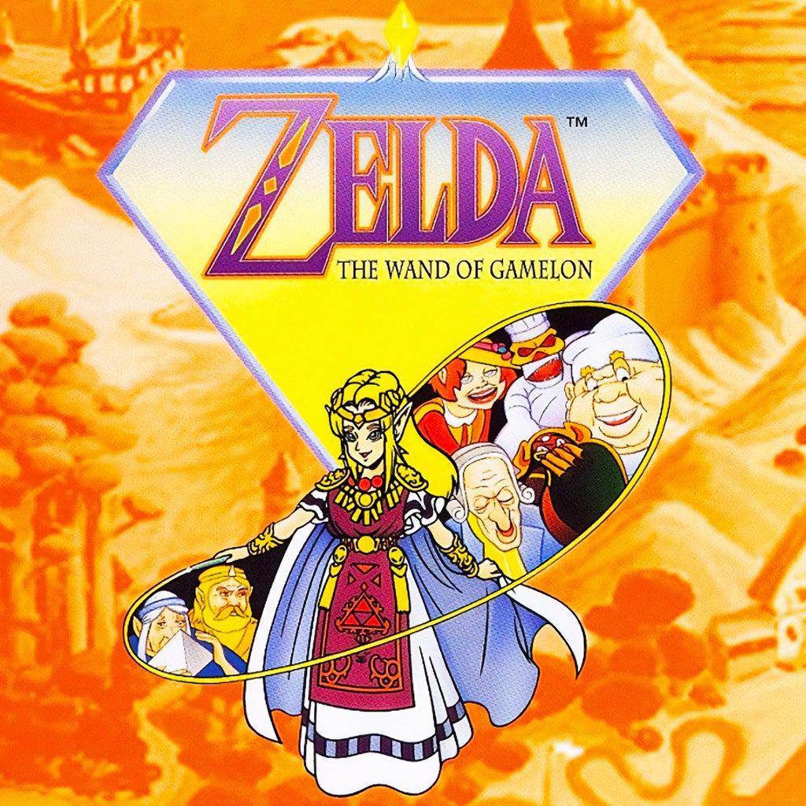

Zelda: The Wand of Gamelon ist wie die anderen CD-i-Titel ein Produkt der Lizenz-Experimente der frühen 1990er. Technisch und spielerisch unterscheidet es sich deutlich von Nintendos Produktionen und wird eher als Kuriosum der Markenentwicklung betrachtet.
| Titel | Zelda: The Wand of Gamelon |
| Veröffentlichung | 1993 (NA/Others) |
| Plattform | Philips CD-i |
| Entwickler | Animation Magic / Philips |
| Produzent | Philips (Lizenz) |
| Komponist | Various |
Ähnlich wie Faces of Evil setzt Wand of Gamelon auf FMV/animierte Sequenzen mit einfacher Top-Down- und Side-Scrolling-Mechanik. Rätsel, Leveldesign und Steuerung entsprechen nicht dem Nintendo-Standard; das Ergebnis ist spielerisch schwächer, dafür sammelwürdig als Kuriosität. Die narrative Struktur ist episodisch, aber nicht tief integriert in die Hauptserie.